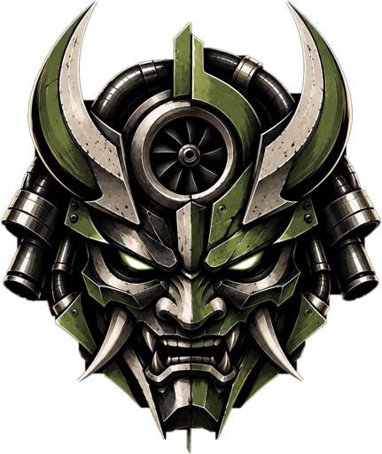

Kaiju Motor
Coches japoneses y motor en vídeos cortos
Kaiju Motor es un canal de vídeos cortos sobre coches, sobre todo japoneses: historias, datos curiosos y leyendas del motor, en TikTok, Instagram y YouTube.
Para publicar nuestros propios vídeos usamos una herramienta interna (AutoReels) que se conecta a nuestras cuentas mediante las APIs oficiales de cada red social.